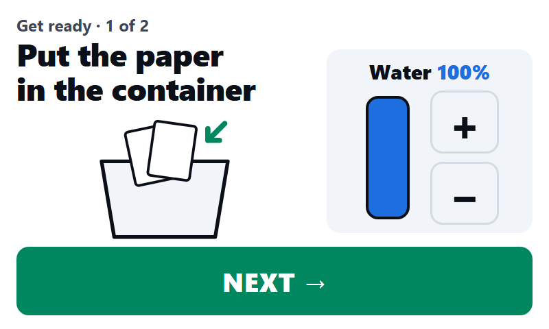
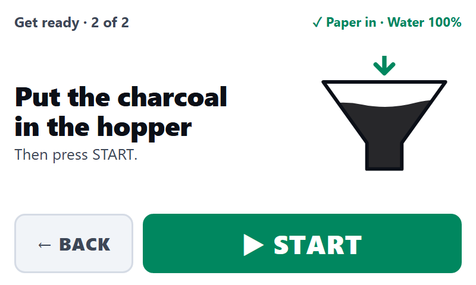
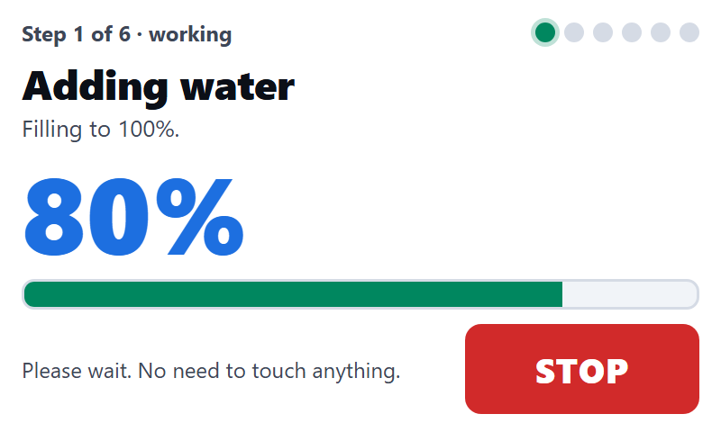
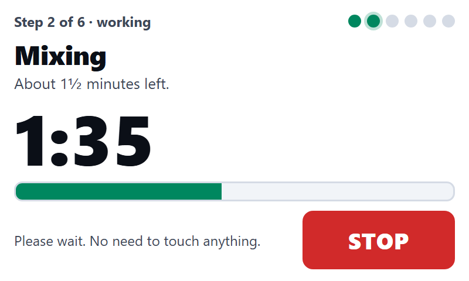
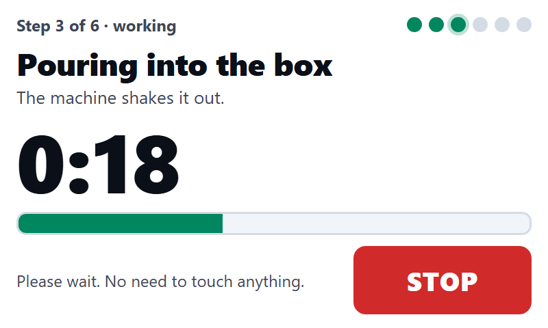
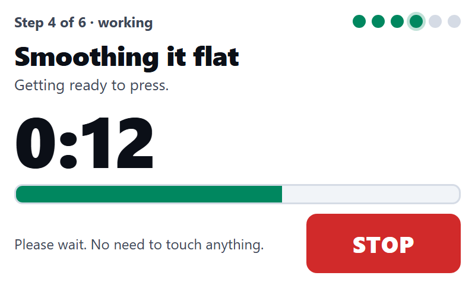
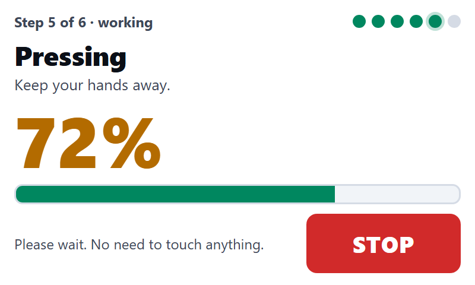
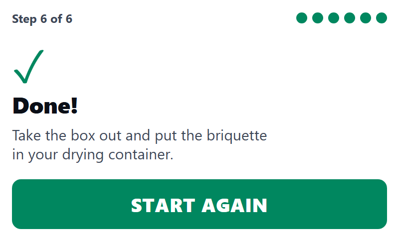
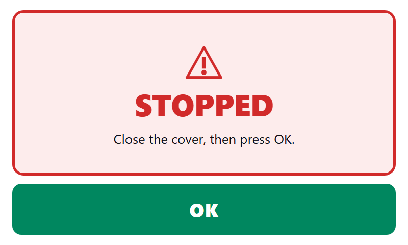

NEXTION 7" HMI · SIMPLE MODE (800×480)
One instruction per screen, big buttons, plain words. Same flow as the detailed mode.

1. Put paper in, water + / − (starts at 100%)

2. Put charcoal in, START

3. Adding water

4. Mixing

5. Pouring into the box

6. Smoothing it flat

7. Pressing

8. Done, take briquette out

Stopped: close cover, OK